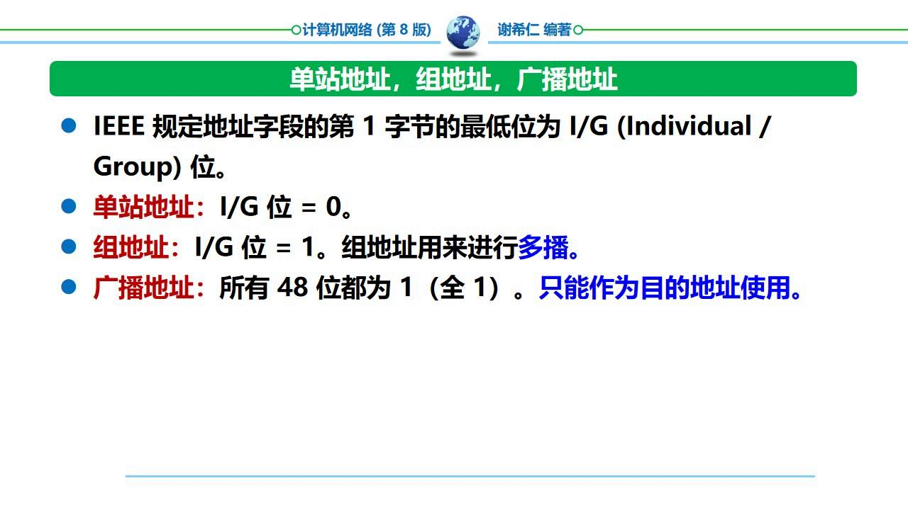
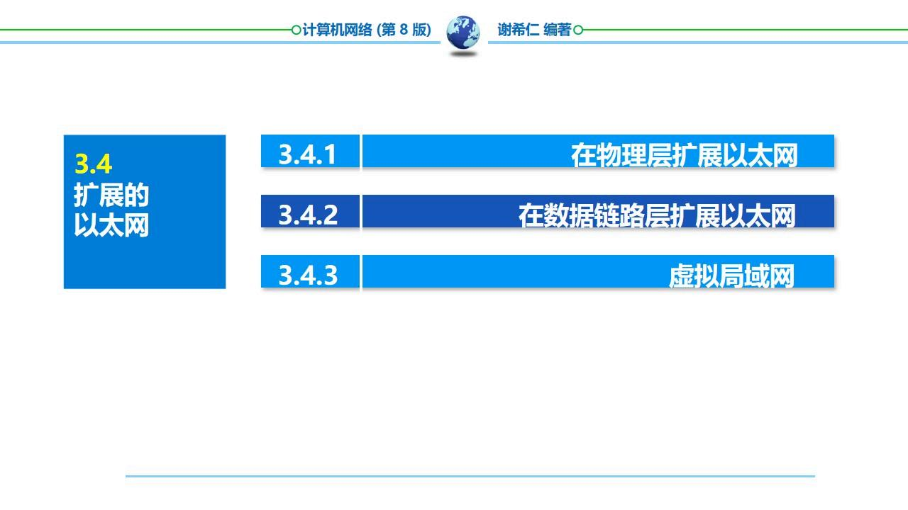
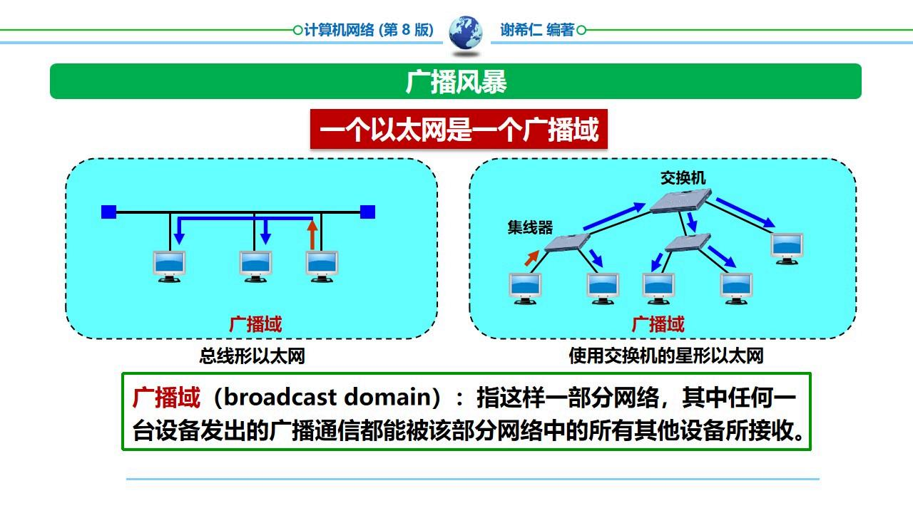
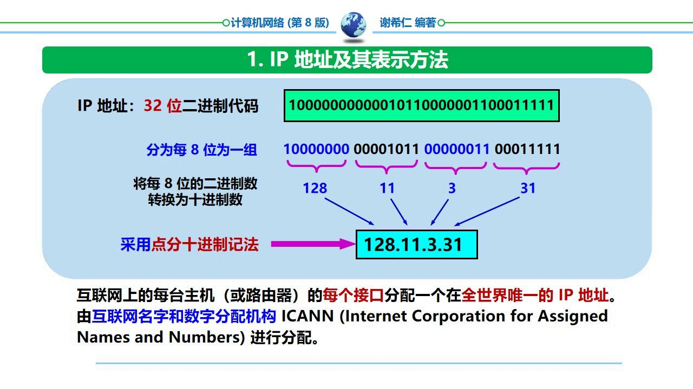
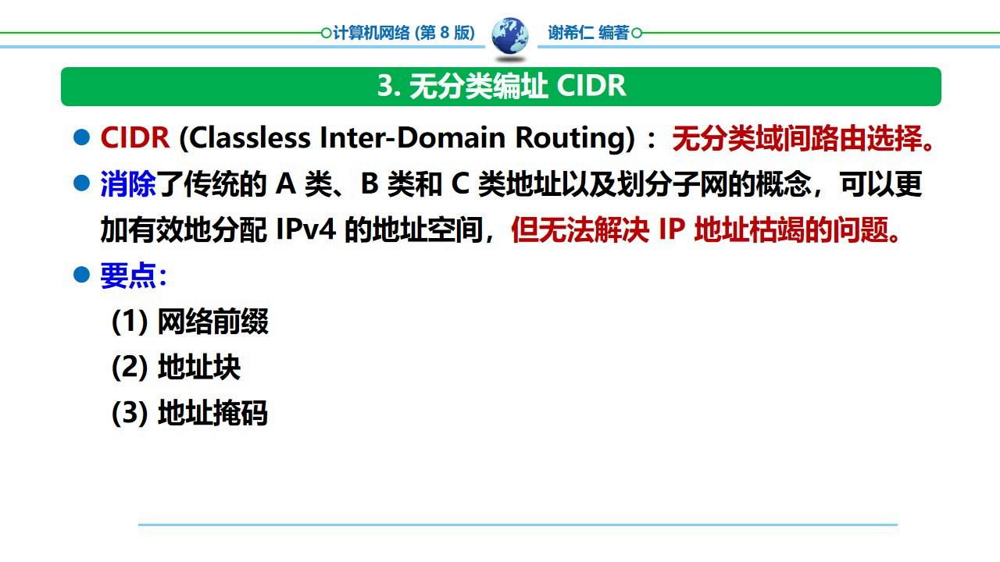
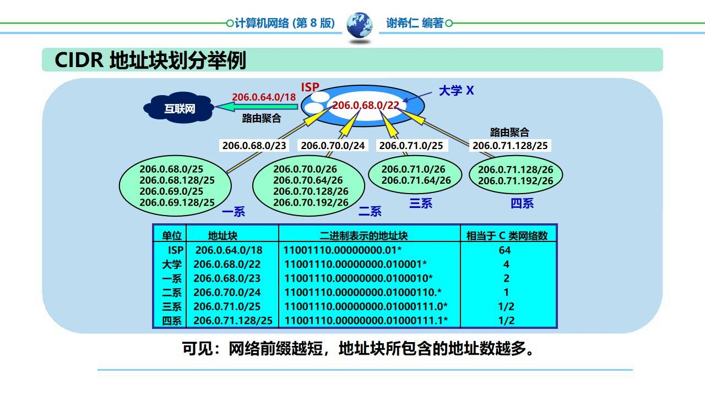

本章核心问题：如何将比特流通过物理介质从发送端可靠地传送到接收端？
物理层——负责在连接各种计算机的传输媒体上传输数据比特流。它不是指具体的传输媒体，而是确定与传输媒体接口有关的一些特性。
物理层的四个特性：
易错：「物理层就是传输媒体」是错误说法。物理层定义了与传输媒体的接口，但传输媒体本身（双绞线、光纤等）不是物理层。
三大部分：源系统（发送端）、传输系统（传输网络）和目的系统（接收端）。

是什么？在带宽为 $W$ Hz 的低通信道中，若不考虑噪声影响，则码元传输的最高速率是 $2W$ 码元/秒。
$$C_{\\text{max}} = 2W \\quad (\\text{Baud})$$
为什么？具体信道能通过的频率范围是有限的，信号中的高频分量往往不能通过信道。如果传输速率超过上限，会出现码间串扰——接收端收到的信号波形失去码元之间的清晰界限。
怎么用？奈氏准则给出的是码元传输速率的上限，而不是信息传输速率的上限。通过提高每个码元携带的比特数，可以提高信息传输速率。
易错：奈氏准则约束的是 Baud（码元/秒），不是 bps（比特/秒）。在无噪声条件下，可以通过多进制调制在 $2W$ Baud 约束下传输更高 $2W \\cdot \\log_2 M$ bps。
信噪比定义：信号的平均功率和噪声的平均功率之比 $S/N$，用分贝表示：
$$\\text{信噪比(dB)} = 10 \\log_{10}\\frac{S}{N}$$
例如：$S/N=10$ 时为 10dB，$S/N=1000$ 时为 30dB。
香农公式：信道的极限信息传输速率 $C$ 为：
$$C = W \\log_2(1 + \\frac{S}{N}) \\quad (\\text{bit/s})$$
含义：增大带宽 $W$ 或增大信噪比 $S/N$ 都可以提高信道容量。只要信息传输速率低于极限，就一定能找到某种方法实现无差错传输。
易错：奈氏准则给出的是无噪声假设下的码元速率上限，香农公式给出的是有噪声下信息速率的上限。两者不能混用！

| 媒体类型 | 特点 | 典型速率 |
|---|---|---|
| 双绞线 | 两根绝缘铜线绞合，绞合度越高传输率越高。UTP（无屏蔽）/STP（屏蔽） | 100Mbps ~ 10Gbps |
| 同轴电缆 | 内导体+绝缘层+外屏蔽层+保护套，抗干扰特性好 | 10Mbps |
| 光纤 | 通过光脉冲通信，传输带宽极大，误码率最低，不受电磁干扰 | 数十 Gbps ~ Tbps |
光纤通信原理：发送端光源（LED/激光器）产生光脉冲；接收端光检测器（光电二极管）还原电信号。光纤通信的误码率最低。

指自由空间中的无线传输：无线电波、微波、红外线、激光等。
了解FDM (Frequency Division Multiplexing)——将整个带宽分为多份，用户在分配到一定频带后，在通信过程中自始至终都占用这个频带。所有用户在同样的时间占用不同的频带。

TDM (Time Division Multiplexing)——将时间划分为等长的 TDM 帧，每个用户在每帧中占用固定序号的时隙。所有用户在不同的时间占用同样的频带。
缺点：信道利用率低——某用户无数据传输时，其分配的时隙被浪费。
统计时分复用 STDM——改进版，按需分配时隙，提高信道利用率。

CDM (Code Division Multiplexing)——各用户使用特殊挑选的不同码型，在同样的时间使用同样的频带通信。
CDMA 工作原理：

易错：CDMA 中每个站的码片序列是互相正交的。收到信号后，用哪个站的码片做内积就能恢复哪个站的数据。这不是简单的频谱扩频，而是基于正交码的复用。
| 技术 | 共享方式 | 关键特点 |
|---|---|---|
| FDM | 频带分割 | 同时间、不同频率 |
| TDM | 时间分割 | 同频率、不同时间 |
| STDM | 按需时隙 | 提高信道利用率 |
| WDM | 波长（光的FDM） | 光纤中不同波长复用 |
| CDM/CDMA | 码型区分 | 同时间、同频率、不同码型 |